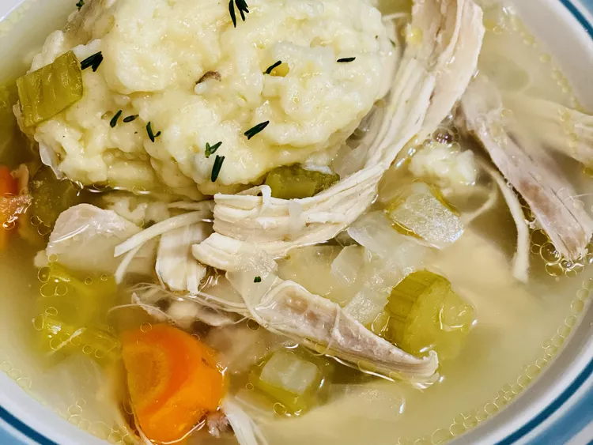

Chef John's Chicken and Dumplings

Description
Not only is this chicken and dumpling recipe American and classic, it is also one of the most comforting things you'll ever eat.
The great thing about this dumpling recipe is that it will work on just about any soup or stew!
Ingredients
- 1 (3 to 3 1/2 pound) whole chicken
- 2 ½ quarts cold water
- 1 large carrot, cubed
Steps
- Place chicken in a Dutch oven. Add water, carrot, celery, onion, 3 sprigs of thyme, and bay leaf. Bring to a boil, cover, reduce heat to low, and simmer for 1 hour. Remove chicken from dutch oven and transfer to a bowl; set aside to cool.
- Increase heat and bring the stock to a simmer. Skim off any chicken fat that appears on top of the stock and reserve in a bowl. Combine 2 to 3 tablespoons of the reserved fat with flour in a small bowl; stir to make a paste, adding more flour if needed. Add the chicken fat and flour mixture to the stock. Reduce heat and simmer for 15 minutes.